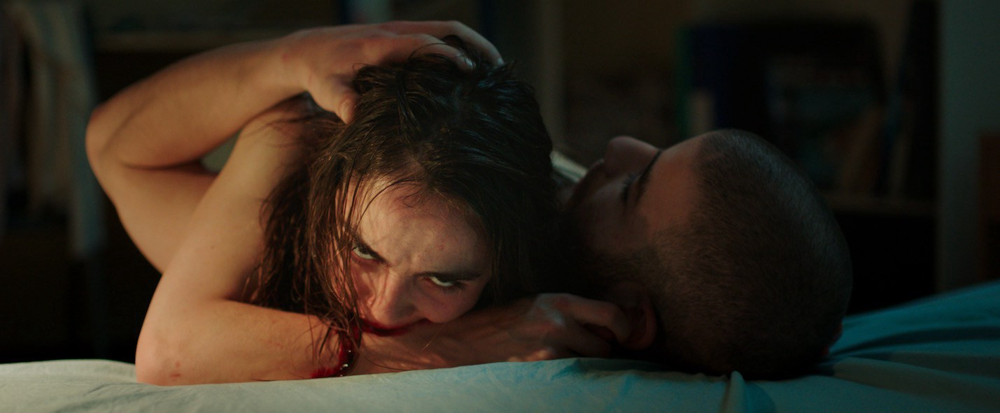
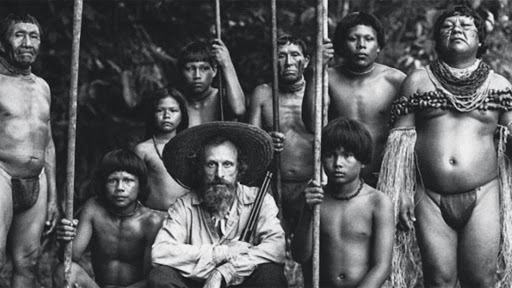

Directora de cine y documentales franco-argelina. En 2019, estrenó su primer largometraje, Papicha, que fue seleccionado para el Festival de Cine de Cannes. Dentro de su filmografía se encuentran:
Particules Elementaires (2007), La Cuisine en Héritage (2009), Cinéma Algérien, Un Nouveau Souffle (2011), Edwige (2012) y Papicha (2019).
Stills de Papicha (2019)
Julia Ducournau
Directora de cine y guionista francesa. En 2011, su cortometraje Junior ganó la distinción Petit Rail d'Or en el Festival Internacional de Cine de Cannes.
Su película de 2016, Raw, fue exhibida en la semana de la crítica del Festival de Cannes en su versión 2016. Dentro de su filmografía se encuentran: Junior (2011), Mange (2012) y Raw (2016).
Stills de Raw (2016)

Cristina Gallego
Directora y productora de cine y televisión colombiana. El 2015 produjo la película El Abrazo de la Serpiente, la cual fue nominada a mejor película de habla no inglesa en la edición 88 de los Premios Óscar. Dentro de su filmografía se encuentra: Sumas y Restas (2004), Los Viajes del Viento (2009), El Viaje del Acordeón (2015), El Abrazo de la Serpiente (2015), Pájaros de Verano (2018).
Stills de El Abrazo de la Serpiente (2015)

Chloé Zao
Directora de cine china. Su película, Nomadland (2020), recibió este año el León de Oro en el Festival de Venecia. Además, fue escogida para dirigir la nueva película de Marvel, The Eternals, que se estrenará el 2021. Dentro de su filmografía se encuentra: Songs My Brothers Taught Me (2015), The Rider (2017), Nomadland (2020), The Eternals (2021).
Stills de Nomadland (2020)
Dominga Sotomayor
Directora, productora y guionista chilena. En el 2012 estrenó su primer largometraje, De Jueves a Domingo, en el Festival de Cine de Róterdam. En 2018 obtuvo el premio a la mejor dirección por su película Tarde para morir joven en el Festival de Cine de Locarno, convirtiéndose en la primera mujer en obtener dicho galardón. Dentro de su filmografía se encuentra: De Jueves a Domingo (2012), Mar (2014), Tarde Para Morir Joven (2018).